The flaw in the quartz
Every Bluetooth device in the room, placed by the error of its crystal.
–
CRYSTALS
–
–
ppm
Measured against this receiver's own clock (
HackRF + PortaPack TCXO
,
…
): the distances between crystals are the measurement, where zero sits is not.

POWERED BY
monasd